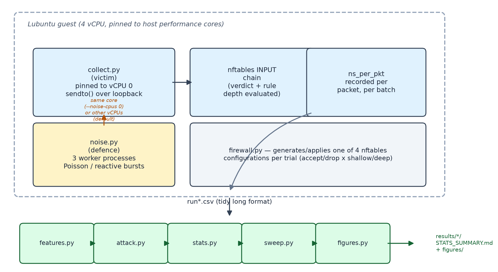
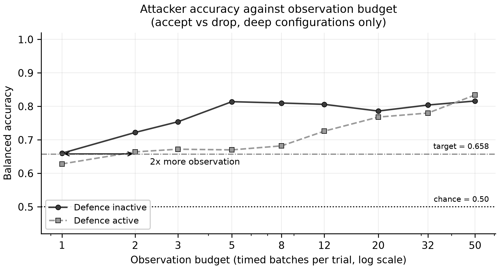

An MSc dissertation experiment — CST4990

A timing leak. A machine-learning attacker. A noise-based defence.
Attacker accuracy
90.6% → 90.4%
barely moved
So does the defence do… nothing?

The attacker needs 2× the observation time to catch up.
Cost of the defence
+536% CPU · +148% tail latency
A rate-limiting control — not a fix.
CST4990 · Sarfraz Masood · Middlesex University